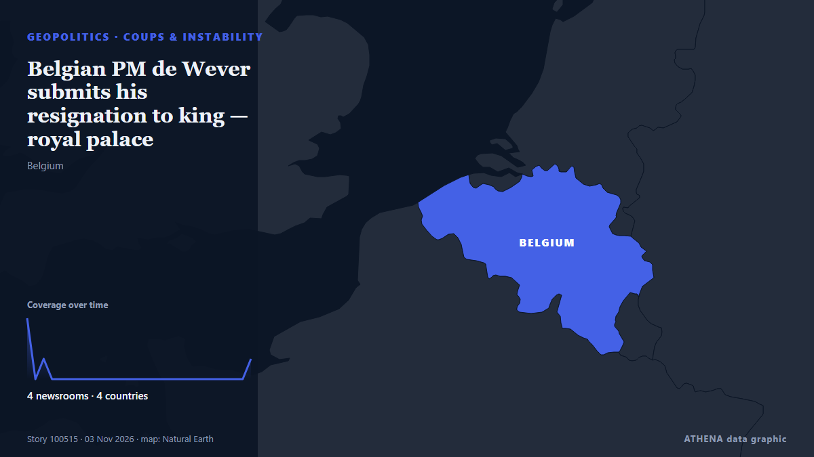

Πραξικοπήματα & αστάθεια
| 22 Οκτ | 0 |
|---|---|
| 23 Οκτ | 0 |
| 24 Οκτ | 0 |
| 25 Οκτ | 0 |
| 26 Οκτ | 0 |
| 27 Οκτ | 0 |
| 28 Οκτ | 0 |
| 29 Οκτ | 0 |
| 30 Οκτ | 1 |
| 31 Οκτ | 0 |
| 1 Νοε | 0 |
| 2 Νοε | 2 |
| 3 Νοε | 0 |
| 4 Νοε | 0 |
Οι τίτλοι των ειδήσεων παρουσιάζονται στα αγγλικά, όπως δημοσιεύτηκαν.

Belgian PM de Wever submits his resignation to king — royal palace
As a rule, the monarch rejects the first resignation request from the head of government and instructs him to undertake another negotiation effort. από TASS (English)
3.3Σημασία
0.0Κίνδυνος · none detected
77%Βεβαιότητα
Αλλού στην ενότητα Γεωπολιτική, Πολιτική & Ασφάλεια
Περισσότερα ›Οι υπόλοιπες υποενότητες της ενότητας Γεωπολιτική, Πολιτική & Ασφάλεια αυτή τη στιγμή.